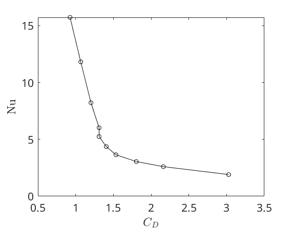
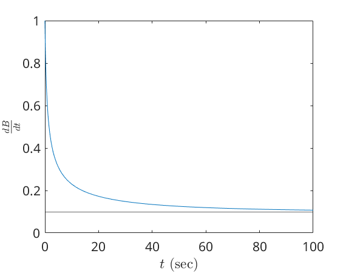
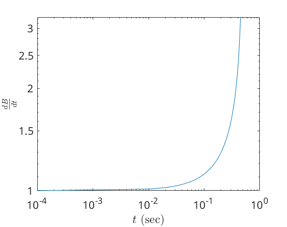

Contents
%{ @author: Benjamin Bemis Ph.D Student, Advisor: Dr Juliano Description: AME 70634: Flow Control Homework: 2 Due: 10/7/2024 %}
Preperation of the workspace
fontsize = 16; % set(0,'DefaultFigureWindowStyle','docked') set(0,'DefaultTextInterpreter','latex') set(0,'DefaultAxesFontSize',fontsize) set(0,'DefaultLegendFontSize',fontsize) colors = ["#000000","#1b9e77","#d95f02","#7570b3","#0099FF"];
Problem 2
Pr = 0.71; C1 = 0.3; C2 = (0.62 * Pr^(1/3)) / (1+(0.4/Pr)^(2/3))^(1/4); Cd = [11.024348691549282, 3.027027027027027; 22.539339047347912, 2.1621621621621623; 32.22814389988288, 1.8040540540540542; 47.60439595420854, 1.5337837837837838; 70.3167554794647, 1.4054054054054055; 103.86532592315581, 1.310810810810811; 139.16480383601055, 1.310810810810811; 266.6136330715482, 1.2027027027027029; 563.1035111041316, 1.0675675675675675; 1010.894613309757, 0.9256756756756758]; Nu = C1+C2.*(Cd(:,1).^(0.5)); figure plot(Cd(:,2),Nu,"ko-") xlabel("$C_D$") ylabel("Nu")
Problem 4
c1 & c2 positive
Re_crit = 0.01; c1 = 1; c2 = 1; [t,dB] = ode45(@(t,B) c1*(Re_crit)*B - c2*abs(B)^2*B, [0.0001,100], 1); figure plot(t,dB) yline(0.1) ylim([0,1]) xlabel("$t$ (sec)") ylabel("$\frac{dB}{dt}$") % positive c1 -c2 c1 = 1; c2 = -1; [t,dB] = ode45(@(t,B) c1*(Re_crit)*B - c2*abs(B)^2*B, [0.0001,0.45], 1); figure loglog(t,dB) xlabel("$t$ (sec)") ylabel("$\frac{dB}{dt}$") 